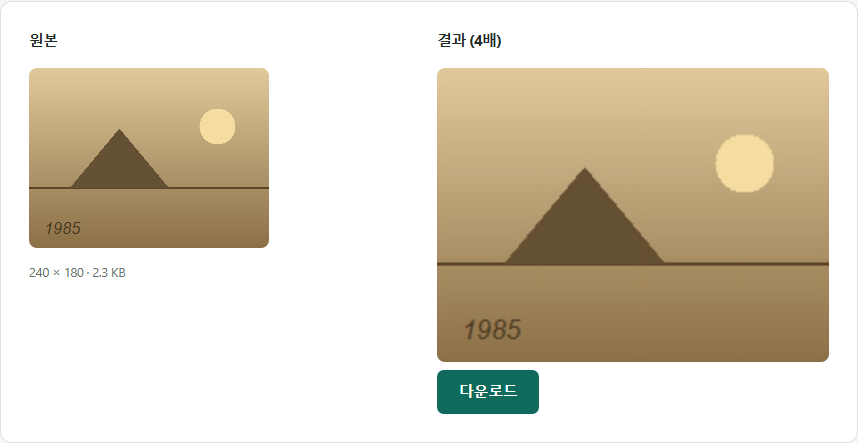

IMAGE TOOLBOX / GUIDE
옛날 사진, 스캔부터 보관까지
서랍 속 인화 사진을 디지털로 옮기는 전체 과정을 순서대로 정리했습니다.
1단계: 몇 DPI로 스캔해야 할까
단순히 보관만 할 목적이라면 300DPI로 스캔해도 충분합니다. 나중에 확대해서 인화하거나 손상된 부분을 복원할 계획이 있다면 600DPI로 스캔해두는 것이 좋습니다. 문제는 용량입니다. 600DPI는 300DPI보다 가로·세로 픽셀이 각각 두 배라서 픽셀 수가 네 배가 됩니다.
스캐너 종류도 결과에 영향을 줍니다. 일반적인 평판(플랫베드) 스캐너는 인화된 사진을 스캔하기에 적합하지만, 필름이나 네거티브 원본이 있다면 전용 필름스캐너가 초점과 해상도 면에서 더 좋은 결과를 냅니다. 컬러 사진은 컬러로, 흑백 사진은 흑백 모드로 스캔해야 불필요하게 파일이 커지지 않습니다.
2단계: 스캔 파일 형식과 용량, 직접 비교해 봤습니다
스캐너 프로그램은 PNG나 TIFF처럼 화질 손실이 없는 형식으로 저장하는 경우가 많고, 이 파일들은 무척 큽니다. 4×6인치(10×15cm) 인화 사진을 스캔한 크기의 테스트 이미지를 이미지 압축 도구로 바꿔 봤습니다.
| 저장 방식 | 300DPI (1800×1200) | 600DPI (3600×2400) |
|---|---|---|
| PNG 원본(무손실) | 2.9MB | 11.2MB |
| JPG 품질 90 | 280.0KB | 939.9KB |
| JPG 품질 80 | 121.3KB | 375.3KB |
| WebP 품질 80 | 127.4KB | 470.1KB |
PNG를 JPG 품질 90으로만 바꿔도 90% 넘게 줄었습니다. 600DPI 파일은 같은 설정에서 300DPI 파일의 약 3~4배 용량이었으니, 사진 500장을 스캔한다면 이 차이가 수 GB로 벌어집니다. 화질 손실이 걱정된다면 품질 90부터 시작하는 것을 권합니다.
측정에 쓴 파일은 빛바랜 인화 사진처럼 직접 만든 테스트 이미지입니다. 실제 사진은 테스트 이미지보다 디테일이 많아서 용량이 덜 줄어드는 편이니, 숫자는 대략적인 경향으로 봐 주세요.
원본은 남기고, 사본을 줄이세요
추천하는 보관 방식은 두 벌로 나누는 것입니다.
- 보관용 원본: 600DPI(또는 300DPI) PNG·TIFF 그대로 외장하드나 USB에 백업. 나중에 확대 인화하거나 복원할 때 씁니다.
- 보고 나누는 사본: JPG 품질 85~90으로 바꾼 파일. 가족 단톡방에 보내거나 클라우드에 올릴 때 씁니다. 휴대폰 화면으로만 볼 거라면 긴 변 1800px 정도면 충분한데, 테스트에서 600DPI 원본(11.2MB)을 긴 변 1800px·JPG 품질 85로 줄였더니 82.1KB가 됐습니다.
여러 장을 클라우드에 보관할 계획이라면 클라우드 저장공간 아끼는 팁도 참고하세요.
3단계: 흐릿하거나 작게 나온 사진은 AI로 확대
오래된 사진 중에는 원본 자체가 작게 인화됐거나 스캔 결과가 흐릿한 경우가 있습니다. 이런 사진은 이미지 업스케일링으로 더 선명하게 키울 수 있습니다. 다만 이 도구는 원본이 가로세로 각각 1000px 이하일 때만 입력받으므로, 300DPI 이상으로 스캔한 파일은 먼저 해당 부분만 잘라내거나 크기를 줄여야 합니다. 초점이 심하게 나가거나 훼손된 사진은 AI가 참고할 정보 자체가 부족해 개선 폭이 작습니다. 이 한계는 이 글에서 자세히 다룹니다.

4단계: 여러 장을 한 파일로 정리하고 싶다면
정리한 사진이 여러 장이라면 낱장으로 흩어두는 대신 이미지→PDF로 앨범 순서대로 하나의 파일로 묶어두면 관리하기 편합니다. 이때도 줄인 사본으로 묶어야 PDF가 가볍습니다. 원본 PNG를 그대로 묶으면 사진 용량이 거의 그대로 PDF에 들어갑니다.
촬영 날짜 정보는 스캔해도 남지 않습니다
디지털카메라나 스마트폰으로 찍은 사진에는 촬영 날짜가 파일에 자동으로 기록(EXIF 메타데이터)되지만, 인화 사진을 스캔한 파일에는 이런 정보가 없습니다. 나중에 연도별로 정리하고 싶다면, 스캔 직후에 파일 이름에 대략적인 연도나 사건을 적어두는 것이 나중에 찾기 훨씬 편합니다. 예: 1994_제주도_가족여행_01.jpg
자주 묻는 질문
스캔 DPI를 무조건 높게 하면 좋은가요?
화질은 좋아지지만 용량도 크게 늘어납니다. 테스트에서 600DPI PNG(11.2MB)는 300DPI PNG(2.9MB)의 약 4배였습니다. 단순 보관이면 300DPI, 확대·복원 계획이 있을 때만 600DPI를 권장합니다.
스캔한 PNG를 JPG로 바꾸면 얼마나 줄어드나요?
테스트한 4×6인치 사진 기준으로 JPG 품질 90에서 90% 이상 줄었습니다(300DPI 2.9MB → 280.0KB, 600DPI 11.2MB → 939.9KB). 원본 PNG는 따로 백업해 두고 사본을 JPG로 쓰는 것을 권합니다.
많이 훼손된 사진도 AI로 복원할 수 있나요?
AI 업스케일링은 남아있는 픽셀 정보를 바탕으로 경계와 질감을 선명하게 다듬는 것이지, 사라지거나 심하게 훼손된 부분을 원래대로 복원하는 것은 아닙니다. 손상이 심한 사진은 개선 폭이 제한적입니다.
스캔 앱(스마트폰 카메라)으로 찍어도 되나요?
전용 스캐너보다는 화질이 떨어지지만, 스캐너가 없을 때 대안으로는 쓸 수 있습니다. 빛 반사와 그림자가 생기지 않도록 조명에 신경 쓰고, 사진을 최대한 평평하게 펴서 촬영하는 것이 중요합니다.
여러 장을 한 번에 스캔하면 나중에 어떻게 나누나요?
스캐너로 여러 장을 한 번에 스캔한 뒤에는 사진 편집 프로그램으로 각 사진 영역을 따로 잘라내야 합니다. 이 사이트의 압축 도구는 정해진 크기·비율로 잘라내는 기능(가로·세로 위치 조절 가능)만 있고, 여러 사진을 영역별로 나눠 잘라내는 기능은 없습니다.
색이 바랜 사진도 스캔하면 원래 색으로 돌아오나요?
아니요. 스캔은 있는 그대로를 디지털로 옮기는 과정이라 색 바램 자체가 없어지지는 않습니다. 색 보정은 스캔 후 별도의 사진 편집 프로그램에서 진행해야 하며, 이 사이트는 색 보정 기능을 제공하지 않습니다.